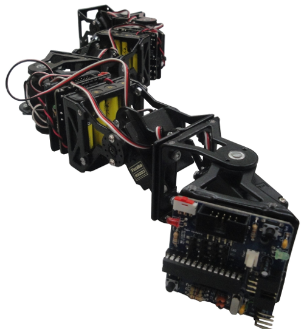

Ya está liberada la versión 001 de la
ArduSnake,
una librería para la locomoción de robots modulares con Arduino,
basada en osciladores sinusoidales
(publicada también en thingiverse).
Con ella es muy fácil mover los robots usando la tarjeta Skymega o
cualquiera que sea Arduino-compatible.
Es la sucesora de los micro-osciladores, que había desarrollado para los microcontroladores PIC (en la tarjeta Skycube). Sin embargo, desde que diseñamos la tarjeta Skymega, estamos migrando todo a los micros ATMEL y usando el software de Arduino, para integrarnos en su comunidad.
En este vídeo se puede ver cómo se mueve la configuración mínima Minicube-I con ArduSnake:


La librería tiene varias capas que ofrecen diferentes APIs. De momento todos los ejemplos se han centrado únicamente en los osciladores, que son los más generales y permiten la locomoción muchos tipos de robots modulares (También de los robots con ruedas limitadas).